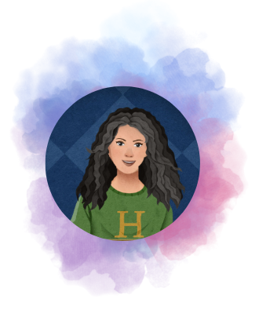

Home
Independent Work
Work Experience
University Projects
Beyond CS
University Projects
Stock Market Prediction
Used Time Series Models to predict the closing price of a stock.
We experimented with ARIMA and LSTM
LSTM showed worse results as the number of previous days' data we used was less.
Link to the analysis code and slides
Detection of Atypical Elements by Transforming task to Supervised form
Implemented a model based on the similarly named paper by Piotr Kulczycki and Damian Kruszewski
Found Atypical elements using a mathematical model.
Expanded the population of atypical elements with a similar distribution as the atypical elements detected earlier using the Von Neuman method
Used a Decision Tree on the typical and synthetic atypical elements.
Link to the project code and Slides
Statistical downscaling of temperatures of Bhuntar, Himachal Pradesh
Used temperatures of a larger region to predict the temperature of a small city
Compared results from Linear Regression, Multiple Linear Regression and ANN models.
Link to the Paper
Sprucing up trees - Error Detection in Treebanks
This was an NLP project I had worked on in my 6th Semester. Our team analysed and implemented the paper
Sprucing up trees - Error Detection in Treebanks
.
Link to the project report
Pixel Generator
In this project, the user can submit the number of rows and columns they want in the grid along with the size of each cell.
They can choose a color and start painting each cell to create images.
Link to the project code
pixel generator play

Hi,
I am Hridaya Annuncio.
I like Computer Science and Maths.
And that's why I even created a YouTube channel to share their beauty.
Hope you have fun working on whatever subjects intrigue you :)
Happy Learning!